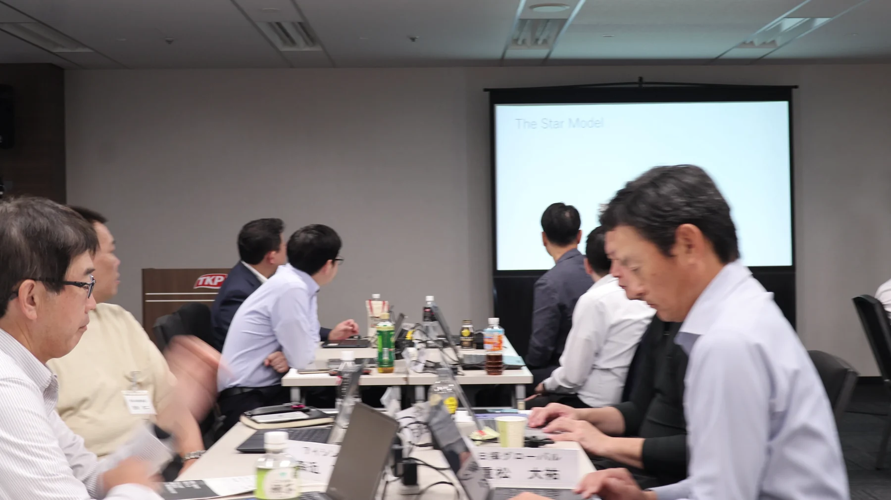
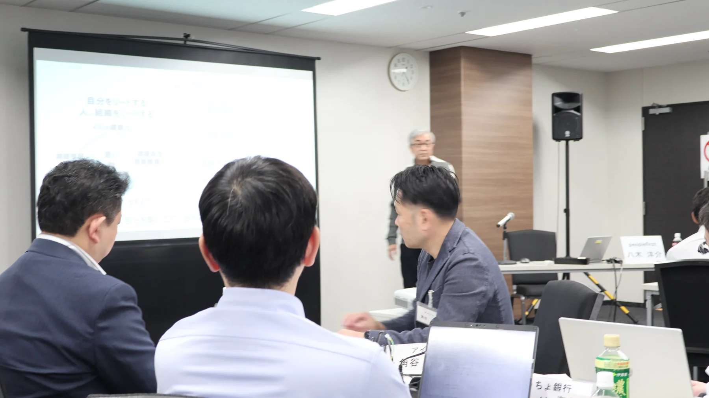

2026年10月22日から23日まで、JMI EMC第4単位「リーダーシップⅠ」が開催された。1日目は、既存事業を深めながら新たな可能性を探索する「両利きの経営」と、変革を率いるリーダーシップを考える。2日目は、チームプロジェクトのテーマを発表し、問いと仮説を参加者同士で磨いた。後半は、自分を動かす志と判断の軸を見つめるオーセンティック・リーダーシップへ。組織の変革からチームの探究、そして自分自身の内側へと視点を往復させる2日間となった。
KEY POINTS
- 既存事業の深化と新たな探索を両立させ、変革を動かすリーダーの役割を考える
- チームが持ち寄った問題意識を発表し、対話とフィードバックから問いを磨く
- すでに未来を生きる人や組織に目を向け、仮説を現場で確かめる視点を持つ
- 自分を駆り立てる志と判断・行動の軸を言葉にし、自らをリードする
DAY 1｜変革を構想する——両利きの経営とリーダーシップ
第4単位の初日は、「両利きの経営のリーダーシップ」から始まった。すでに成果を上げている事業を磨き込むことと、まだ答えのない領域へ踏み出すこと。その二つを同時に進めるとき、経営者は何を見て、どのように組織を動かすのかを考えた。
変革は、新しい施策を加えるだけでは進まない。既存の成功を支えてきた仕組みや判断基準を理解したうえで、未来に必要な探索へ人と資源を振り向ける必要がある。短期の成果と中長期の可能性が競合する場面で、何を守り、何を変えるのか。経営者の意思と説明する力が問われる。
午後は「変革のリーダーシップ」へ進み、CEOプレゼンテーションのキックオフも行われた。自社の未来をどのように構想し、経営者として何を語るのか。後半の単位へ向け、参加者は自社の戦略アジェンダを自分自身の言葉で示す準備を始めた。
DAY 2｜チームの問いを、未来の仮説へ
2日目の午前は、チームプロジェクトのテーマ設定を発表した。各チームは、個々の問題意識を持ち寄って共通する問いを探し、これから何を明らかにするのか、どのような仮説で調査を進めるのかを示した。
あるチームは、AIの進化によって人間や組織の役割、さらには企業が存在する理由まで問い直されるのではないかと問題を提起した。発表後の対話では、既存の経営者像だけを調べるのではなく、肩書きや組織の境界を越えて、すでに異なる働き方やリーダーシップを実践している人にも目を向ける考えが示された。
未来は突然一斉に訪れるのではなく、その兆しはすでにどこかに現れている。一般化された答えを探す前に、「未来を先に生きている人は誰か」「その人は何を選び、どのように働いているのか」を聞きにいく。調査対象の選び方そのものが、プロジェクトの視野を広げていった。
さらに、チームを前へ進めるためには、テーマだけでなく、戦略・役割・進め方・一人ひとりの動機をつなぐことが必要になる。全員を同じ考えにそろえるのではなく、異なる能力やマインドセットを強みとして生かす。問いの質と同時に、探究を続けられるチームのあり方も検討した。
講師からは、回を重ねるにつれて議論が深まり、日本らしさや日本企業らしさを掘り下げようとする姿勢が見えてきたとの所感も語られた。AIなどの新しい技術を取り入れながら、自分たちの主観や問題意識を重ねていく。そのプロセスは「AIと人間の知恵の融合」と表現された。

既知の答えを集めるのではなく、
すでに始まっている未来を探しにいく。
DAY 2｜自分をリードする——志と判断の軸
午後は、八木洋介氏によるオーセンティック・リーダーシップのセッションが行われた。講義の中心に置かれたのは、他者を率いる前に、まず自分自身をリードできるかという問いだった。
自分は何のためにこの会社にいて、何を実現したいのか。社会や会社から与えられた役割をこなすだけではなく、自らを動かす「思い」や「志」を持つことが、リーダーシップの出発点になる。さらに、日々の判断と行動を支える価値観や原理原則を、自分の軸として言葉にすることの大切さが語られた。
講義では、人の活力を引き出すという判断軸を例に、制度で一律に縛るのではなく、マネージャーが一人ひとりと向き合える組織をつくる考え方が示された。何を大切にするかが明確であれば、個別の状況でも判断はぶれにくくなる。
参加者はライフチャートを使って自身の経験を振り返り、どのような出来事が現在の価値観を形づくったのかを共有した。そのうえで、経営者としての「思いと軸」を整理し、リーダーシップ宣言へ。自分らしさを確認するだけでなく、その自分をどう鍛え、組織の変革へつなげるかまでを考えた。

受講者と講師の言葉から
第4単位を終えた直後のインタビューには、講義や対話が一人ひとりの内側に残した変化が表れていた。
幼少期のストーリーを振り返り、自分の価値観に影響を与えた経験や言葉を理解できた。「ぜひ失敗してみなさい」という言葉を、これからの仕事の中で実践したい。
参加者インタビューより
企業がどんな局面でも生き残るための礎や力、柔軟性として、レジリエンスの本質が印象に残った。異業種の人と一つのテーマを深く話すことで、新しい切り口が見えた。
参加者インタビューより
メンバーとの対話によって、自分がまだ言葉にできていない部分に気づいた。もっと自分自身を磨かなければならないと感じている。
参加者インタビューより
学びを実践へ移すには、問題意識に基づくモチベーション、異なる現実に開かれていること、そして得たものを職場で分かち合うこと。この三つが必要になる。
パトリック・ラインメラ氏
インタビュー C157より
二日間を通して——構想・対話・内省を往復する
構想する
既存の強みと未来の探索をどう両立し、組織の変革を動かすか考える。
問いを磨く
発表と対話を重ね、問いの範囲と調査する相手を広げる。
自分へ戻る
志と判断軸を言葉にし、自分から変革を動かす準備をする。
組織の変革を構想する視点と、未来の兆しをつかむチームの探究、そして自らを動かす志と判断軸。三つは別々の課題ではない。経営者が未来を示し、異なる人の力をつなぎ、困難な局面でも決断を続けるために必要な一つの流れである。さらに、学びを職場へ持ち帰り、周囲と共有して小さな動きを生み出すところまでが実践となる。第4単位で得た問いは、チームプロジェクトとCEOプレゼンテーションの双方へ引き継がれていく。
変革は、
自分をリードすることから始まる。
未来の事業を構想し、チームで問いを深め、最後は自分自身の志と判断軸へ戻る。変革を動かすリーダーシップは、立場や権限だけから生まれるものではない。何を実現したいのかを言葉にし、異なる人の力をつなぎながら、自らが最初の一歩を踏み出す。その覚悟を確かめる2日間となった。
EDITORIAL NOTE
- 取材対象：JMI EMC第37期 第4単位「リーダーシップⅠ」
- 開催日：2026年10月22日から23日
- 会場：TKP新橋カンファレンスセンター
- 実施主体：一般社団法人日本能率協会 経営・人材革新センター
- 記事本文は公式プログラム資料、10月23日の講義音声、講師・参加者インタビューをもとに構成
- インタビュー発言は意味を変えない範囲で、言いよどみと重複を整理